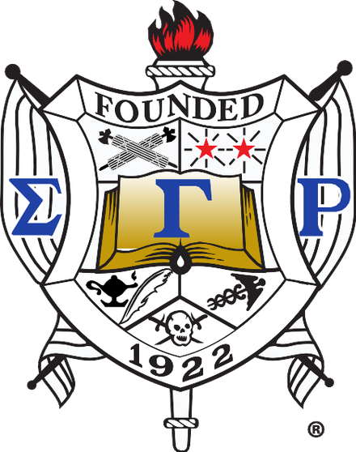

Side by Side
D9 Organization Comparisons
All nine organizations lined up so you can compare dates, colors, mottos and more.
Everything in this table about the real organizations is true history. The D9Legacy owner column is our pretend universe.
| Organization | Type | Founded | Colors | Motto | Known for | D9Legacy owner |
|---|---|---|---|---|---|---|
 Alpha Phi Alpha Alpha Phi AlphaΑΦΑ |
Fraternity | December 4, 1906 Cornell University |
Black and Old Gold | “First of All, Servants of All, We Shall Transcend All” | The great sphinx | Josh (Joshua Samuel) |
 Alpha Kappa Alpha Alpha Kappa AlphaΑΚΑ |
Sorority | January 15, 1908 Howard University |
Salmon Pink and Apple Green | “By Culture and By Merit” | The ivy leaf | Jaylee D. Strong |
 Kappa Alpha Psi Kappa Alpha PsiΚΑΨ |
Fraternity | January 5, 1911 Indiana University |
Crimson and Cream | “Achievement in Every Field of Human Endeavor” | The diamond and the kappa kane | Christopher "CJ" Smith |
 Omega Psi Phi Omega Psi PhiΩΨΦ |
Fraternity | November 17, 1911 Howard University |
Royal Purple and Old Gold | “Friendship Is Essential to the Soul” | The lamp | Open |
 Delta Sigma Theta Delta Sigma ThetaΔΣΘ |
Sorority | January 13, 1913 Howard University |
Crimson and Cream | “Intelligence is the Torch of Wisdom” | The pyramid | Kinte (King Murry) |
 Phi Beta Sigma Phi Beta SigmaΦΒΣ |
Fraternity | January 9, 1914 Howard University |
Royal Blue and Pure White | “Culture For Service and Service For Humanity” | The dove | Open |
 Zeta Phi Beta Zeta Phi BetaΖΦΒ |
Sorority | January 16, 1920 Howard University |
Royal Blue and White | “Scholarship, Service, Sisterhood and Finer Womanhood” | The white dove | Open |
 Sigma Gamma RhoΣΓΡ |
Sorority | November 12, 1922 Butler University |
Royal Blue and Gold | “Greater Service, Greater Progress” | The golden poodle | Ivory Cooper |
 Iota Phi Theta Iota Phi ThetaΙΦΘ |
Fraternity | September 19, 1963 Morgan State University |
Charcoal Brown and Gilded Gold | “Building A Tradition, Not Resting Upon One!” | The centaur | Open |
Fun fact: Kappa Alpha Psi and Delta Sigma Theta both wear crimson and cream, and Phi Beta Sigma and Zeta Phi Beta both wear royal blue and white. Families that match!